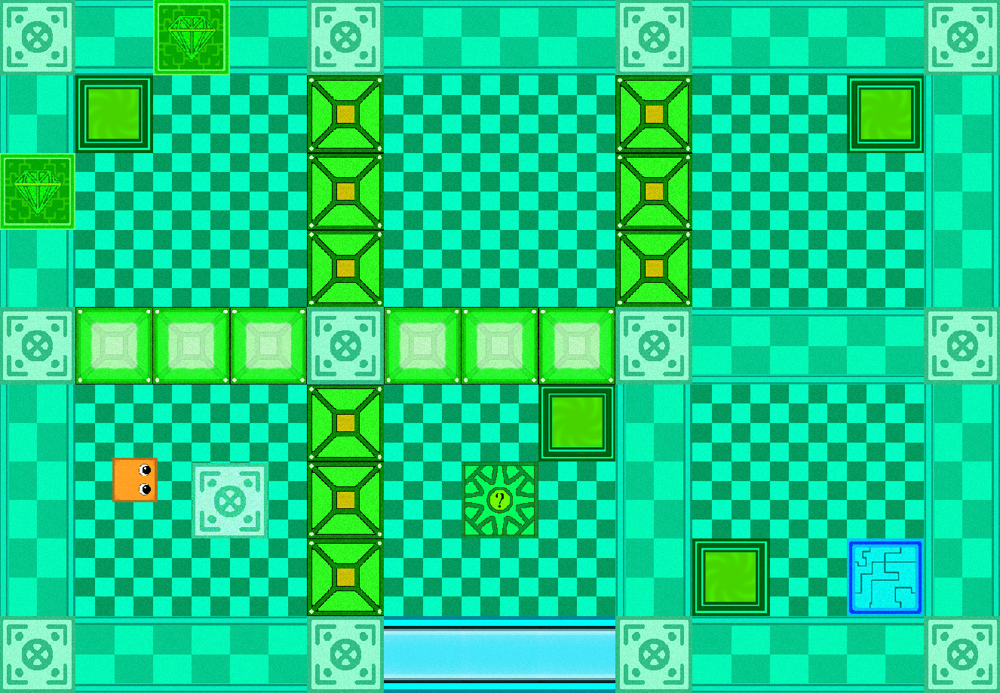

Isn't hard 2
Данный проект является самым лучшим из всех, что я когда-либо делал. Сейчас это минималистичная головоломка, способная взорвать мозг кому угодно.
В середине марта игра вышла в альфа-тест. Вскрылось весьма много багов и неудобность управления, но к бета-тесту это всё обязательно будет исправлено. Хотя альфа-версию вы можете легко найти на моём гитхабе, прошу не скачивать её, так как она вас может разочаровать (в разработке всё-таки, продукт сырее сырого).
Коротко об игре:
Персонаж - это простой кубик с глазками, раньше задумывалась предыстория персонажа и катсцены с другими, но из-за того, что нарисовать что-то нормальное не выходило, от идеи пришлось отказаться.

Он передвигается по различным комнатам. Чтобы пройти уровень, надо найти все монетки и переместиться к финишу. Но не всё так просто. В комнатах будут различнве двери, кнопки, детекторы самого игрока и даже взгляда игрока. Механик действительно предостаточно, что сделает путешествие по уровням действительно интересным и сложным.
Но это ещё не всё! Вы сможете создать свой уровень, сохранить его и отправить знакомым! По большей части, редактор - самое главное в этой игре (подробнее расскажу после бета-релиза). Сетевую игру не реализую, но вот перекидывать файлики пользователи смогут и сами. Чтобы связать дверь и кнопку нужно будет выставить правильную группу. Впрочем, о том, как правильно связывать элементы механизмов, я расскажу в этом разделе.

В игре ровно 3 разноцветных локации (+ одна переходная), у каждой есть свои уникальные механики! Некоторые из них будут простые, а некоторые - весьма контринтуитивны.


Итак, самая первая локация - синяя. Уровни весьма простые, однако под конец возникнет ряд трудностей. На скриншотах показана одна из главных механик - кнопка, которую нужно как-нибудь нажать, чтобы пройти дальше. Список основных механик: переключатель двери, кнопка, детектор игрока, стена-фейк, детектор взгляда игрока - особый барьер.
Ни один из тестеров не смог разобраться с этой локацией так же быстро, как с синей. Почему? Теперь суть игры не просто найти проход, а открыть его. Особые провода пропускают заряд, а различные переключатели и задвижки нужно настроить так, чтобы сигнал попал куда нужно. Звучит сложно, хотя первые три уровня проходятся не более пяти минут. Основные механики: переключатель электричества, провода, детектор сигнала, генератор/поглотитель сигнала.
Данная локация выглядит весьма необычно и многие теряются при переходе на неё. Тут придётся часто сохраняться, но уровни не такие сложные, как предшествующие розовые гиганты (да, последние уровни локаций - это боль). Кристаллы, странные узорчатые блоки, искажённый дизайн... Сможете понять, как они работают?
Серый не означает отсутствие локации, а является переходом на следующую. Разумеется, там могут находиться блоки со всех уровней, из-за чего как таковой дизайн в данном месте отсутствует. Содержит в себе крайне странные механики, например: блоки гравитации и антигравитации, односторонние порталы, "лифты".
А вот пример геймплея (осторожно, если не хотите испортить впечатление от прохождения, не смотрите ролик целиком):
Как играть?
Игра находится в состоянии разработки, потому прошу - не критикуйте. Персонаж управляется на WASD, а скроллингом камеры можно управлять при помощи средней кнопки мыши и комбинаций с другими кнопками.
Сейчас в игре всего лишь 34-36 уровней, однако планируется 70. Бонусные уровни придётся открыватть за достижения. Интересный факт - любой уровень можно посмотреть в редакторе и это не будет читерством.
Чтобы делиться своими уровнями с другими, можно перекидывать файлы сохранений с одного компьютера на другой (Isn't hard 2 // Saves // My_level.txt). Также планирую реалзовать обмен уровнями между игроками подобно тому, как это реализовано в Geometry dash, но на данный момент обещать ничего не могу.
Если хотите присоединиться к альфа-тесту, просьба связаться со мной любым доступным способом (и да, имею право отказать, а без инструкций по установке будет тяжко). Хоть сами файлы игры и находятся в открытом доступе, пока что игра не готова к бета-тесту. Альфа-тест проходит весьма медленными темпами, однако благодаря нему удалось значительно улучшить изначальный проект.
Когда выйдет?
Работать в одиночку весьма сложно, да и времени часто не хватает. Так что точно сказать не могу. Но вы можете помочь разработке, ускорив процесс (если есть энтузиазм, умеешь в дизайн / писать музыку / можешь придумать сюжет и персонажей, цены вам нет!).
Сама игра будет полностью бесплатной (всё на чистом энтузиазме). Также я планирую портировать игру на андроид, но так как я почти не владею Джавой, это произойдёт очень нескоро (учитывая, что для маленьких экранов придётся полностью переделать дизайн, это уже будет Isn't hard 3)